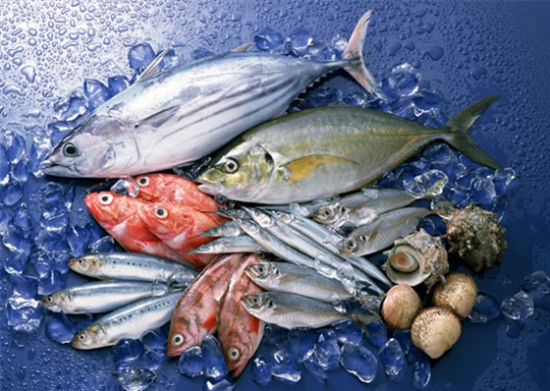

食品安全问题不知从何时开始成为人们日常饮食中无法忽视的一个问题，接二连三的食品安全问题被曝光在公众的视野内，这从一方面反映了我国食品安全机制的逐步完善，但另一方面，也不禁使我们反思：到底是什么原因让这些商贩肆无忌惮的生产这些严重伤害身体健康的食物？难道仅仅是金钱的驱使么？
蚊蝇聚集的黑作坊生产的小面包、为使油条更脆口而添加洗衣粉的油条、用大便做的臭豆腐、牛肚小作坊臭气熏天、用劣质陈化米做的米粉、用福尔马林浸泡的鱿鱼……黑作坊食品换上新包装堂而皇之地走入公众视野，摆上货架公开售卖。最近曝光的毒胶囊事件，更是激起了民众对于食品安全的又一轮担忧。跟随小编一起来盘点十年被曝光的重大食品安全事件，引起了哪些蝴蝶效应与反思。
一、2005年海鲜产品体内含有“孔雀石绿”
事件回放：
2005年6月5日，英国《星期日泰晤士报》报道：英国食品标准局在英国一家知名的超市连锁店出售的鲑鱼体内发现 “孔雀石绿”。有关方面将此事迅速通报给欧洲国家所有的食品安全机构，发出食品安全警报。英国食品标准局发布消息说，任何鱼类都不允许含有此类致癌物质，新发现的有机鲑鱼含有孔雀石绿的化学物质是“不可以接受的”。由此，2005年7月7日，国家农业部办公厅向全国各省、自治区、直辖市下发了《关于组织查处“孔雀石绿”等禁用兽药的紧急通知》，在全国范围内严查违法经营、使用“孔雀石绿”的行为。
2005年6月，《河南商报》记者对湖北、河南等地的养鱼场和水产品批发市场进行了调查，辽宁《华商晨报》记者对辽宁的养殖场和鱼药商店的调查结果都表明：在水产品的养殖过程中，很多渔民仍然用它来预防鱼的水霉病、鳃霉病、小瓜虫病等；在运输过程中，为了使鳞受损的鱼延长生命，鱼贩也常使用孔雀石绿。至于卖孔雀石绿的鱼药商店，由于孔雀石绿市场的存在，仍然在买卖孔雀石绿.2005年11月，继三款“珠江桥牌豆豉鲮鱼罐头”被查出含致癌物孔雀石绿后，香港食物环境卫生署公布的食物最新测试结果显示，“鹰金钱”牌金奖豆豉鲮鱼和甘竹牌豆豉鲮鱼等三个食物样本被查出含有致癌物“孔雀石绿”。2006年11月17日，上海媒体率先报道了山东产多宝鱼药残超标情况。2007年4月，山东省日照市一养殖企业正式起诉台湾统一企业股份有限公司及其在山东青岛的独资企业青岛统一饲料农牧有限公司生产的饲料产品“孔雀石绿”超标。
最新进展：
为了减少非法添加违禁药物的现象，2013年5月1日，佛山开始试行水产品产地标识准入制，对桂花鱼、生鱼、黄骨鱼三种价格较昂贵的鱼类配上“身份证”，即追溯码，可以查到具体的鱼塘，该规定试行至今，其中有2个月查出鱼类非法添加了孔雀石绿。根据佛山市农业局发布的7月份农产品质量安全风险监测情况，高明区的2份草鱼样本查出孔雀石绿残留。有统计发现，2013年以来鱼类产品已经4次查出孔雀石绿残留。
孔雀石危害：
孔雀石绿具有高毒素的副作用。它能溶解很多的锌，引起水生动物急性锌中毒；能引起鱼类的鳃和皮肤上皮细胞轻度炎症，使肾管腔有轻度扩张，肾小管壁细胞的细胞核也扩大：还影响鱼类肠道中的酶，使酶的分泌量减少，从而影响鱼的摄食及生长。美国国家毒理学研究中心研究发现，给予小鼠无色孔雀石绿104周，其肝脏肿瘤明显增加。试验还发现，孔雀石绿能引起动物肝、肾、心脏、脾、肺、眼睛、皮肤等脏器和组织中毒。
孔雀石绿具有高残留的副作用。据专家介绍：孔雀石绿一经使用，养殖动物终身残留。虽然在后期的养殖过程中添加维生素类和微量元素可以减少一些，但至今仍无法完全消除。
孔雀石绿具有三致作用。孔雀石绿进入人类或动物机体后，可以通过生物转化，还原代谢成脂溶性的无色孔雀石绿，具有高毒素、高残留和致癌、致畸、致突变作用，严重威胁人类身体健康。